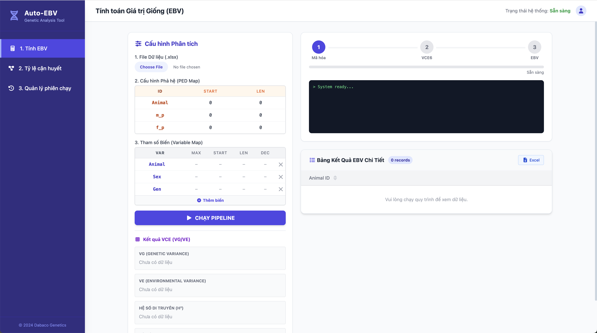
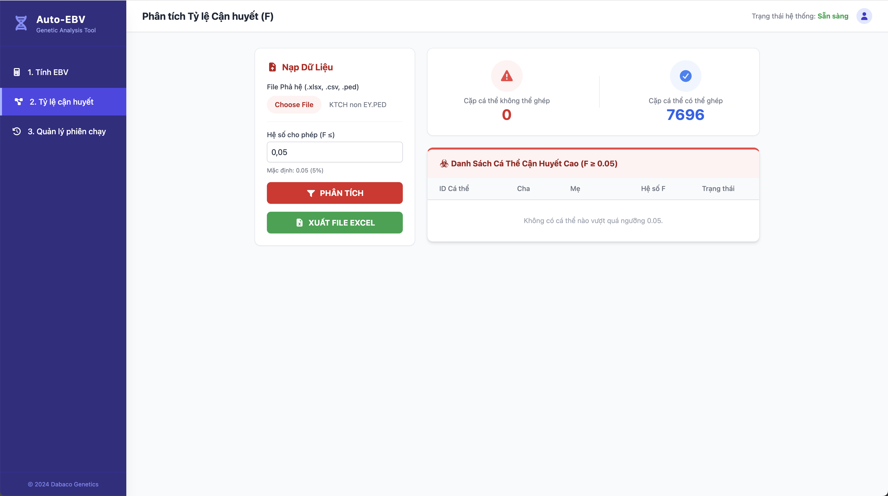
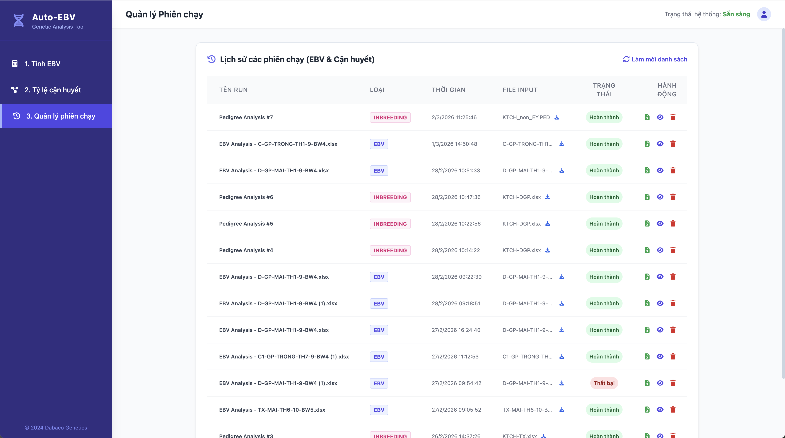

Các Chức Năng Cốt Lõi
Mọi thao tác phức tạp đã được thu gọn trong các giao diện hiện đại, dễ sử dụng.

1. Tính toán EBV Tự động
Chỉ với một cú click "Chạy Pipeline", hệ thống sẽ xử lý toàn bộ quá trình tính Giá trị Giống thay vì phải thực hiện thủ công từng bước. Bạn chỉ cần thoả mãn các đầu vào: file dữ liệu, cấu hình phả hệ và tham số biến.
- Trình diễn kết quả phân tích trực quan ngay trên màn hình (VCE/VG/VE).
- Theo dõi trạng thái tiến trình chạy theo thời gian thực.
- Xuất toàn bộ bảng kết quả chi tiết ra file Excel.

2. Phân tích Tỷ lệ Cận huyết
Đánh giá và kiểm soát hệ số cận huyết (F) một cách dễ dàng. Nạp phả hệ và cấu hình hệ số giới hạn để nhận ngay báo cáo di truyền trực quan.
- Thống kê nhanh số lượng cặp cá thể cận huyết và không cận huyết.
- Hiển thị danh sách chi tiết các cá thể có nguy cơ (hệ số F cao vượt ngưỡng).
- Dễ dàng xuất báo cáo tổng hợp ra định dạng Excel.

3. Quản lý Phiên chạy (Sessions)
Không bao giờ đánh mất tiến trình công việc. Hệ thống lưu trữ tự động mọi lịch sử tính toán EBV và Cận huyết, giúp bạn dễ dàng truy xuất và xử lý lại dữ liệu.
- Hiển thị thông tin chi tiết: Session ID, loại phân tích, thời gian và trạng thái.
- Hỗ trợ tải lại file input đã upload ở phiên trước đó.
- Thao tác nhanh: tải file kết quả, xoá phiên hoặc xem chi tiết.